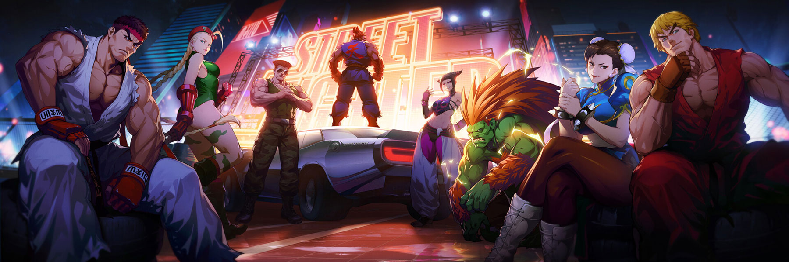

-



Daigo Umehara é uma lenda viva dos jogos de luta, especialmente conhecido por seu domínio em jogos da série Street Fighter. Nascido em 19 de maio de 1981, no Japão, ele é amplamente considerado um dos melhores jogadores de Street Fighter de todos os tempos. Daigo começou a competir em torneios de Street Fighter em uma idade muito jovem e rapidamente se destacou como um prodígio do jogo. Ele é mais famoso por um momento icônico em 2004, conhecido como o "Momento da Parada", onde ele executou uma sequência incrível de contra-ataques para vencer uma partida no Campeonato Mundial de Street Fighter III: 3rd Strike. Além de sua habilidade técnica excepcional, Daigo é admirado por sua mentalidade competitiva e habilidade de adaptação durante as partidas. Ele é conhecido por sua capacidade de ler e antecipar os movimentos de seus oponentes, além de sua habilidade de executar combos difíceis e manobras arriscadas com precisão. Daigo é uma figura lendária na comunidade de jogos de luta e tem uma longa lista de conquistas em sua carreira. Ele é o vencedor de vários torneios importantes ao redor do mundo e tem sido um dos jogadores mais consistentemente bem-sucedidos na cena competitiva de Street Fighter. Além de sua carreira como jogador profissional, Daigo também é autor de livros sobre jogos de luta e uma figura influente na promoção e desenvolvimento da cena de esports no Japão e em todo o mundo. Ele continua sendo uma inspiração para jogadores de todas as idades e uma referência incontestável no mundo dos jogos de luta.
Hajime Taniguchi, mais conhecido pelo seu nome de tela "Tokido". Ele é um famoso jogador profissional de jogos de luta, especialmente conhecido por suas habilidades em Street Fighter. Nascido em 26 de julho de 1985, Tokido é um dos jogadores mais respeitados e temidos na cena competitiva de Street Fighter. Tokido é conhecido por sua habilidade técnica excepcional, inteligência tática e habilidade de adaptação durante as partidas. Ele tem uma longa história de sucesso em competições de Street Fighter, com várias vitórias em torneios importantes ao redor do mundo. Além de suas habilidades como jogador, Tokido também é admirado por sua ética de trabalho e dedicação ao aprimoramento constante de suas habilidades. Ele é frequentemente visto como um dos jogadores mais estudiosos do cenário competitivo, analisando meticulosamente partidas, desenvolvendo estratégias e refinando suas técnicas. Tokido é uma figura influente na comunidade de jogos de luta, tanto como competidor quanto como embaixador do cenário. Sua carreira exemplar e sucesso contínuo o estabeleceram como uma lenda viva do mundo dos esports.
Hajime "Sako" Taniguchi é um jogador de jogos de luta japonês conhecido por sua habilidade excepcional em vários títulos, incluindo Street Fighter, Darkstalkers e Vampire Savior. Ele é amplamente reconhecido por sua precisão técnica, criatividade e capacidade de adaptação durante as partidas. Sako começou sua carreira competitiva no início dos anos 2000 e desde então se tornou uma figura respeitada na comunidade de jogos de luta. Ele é famoso por seu estilo de jogo único e imprevisível, capaz de executar combos difíceis e manobras surpreendentes que muitas vezes pegam seus oponentes desprevenidos. Ao longo de sua carreira, Sako acumulou várias vitórias em torneios importantes ao redor do mundo e conquistou uma base de fãs dedicada por sua habilidade excepcional e personalidade carismática. Ele continua sendo uma figura proeminente na cena competitiva de jogos de luta e um dos jogadores mais respeitados no circuito profissional.

ChatGPT Katsunori "Haitani" Hagashi é um jogador profissional japonês de jogos de luta, conhecido principalmente por suas habilidades em títulos como Street Fighter. Ele começou sua carreira competitiva na década de 1990 e desde então se estabeleceu como uma das figuras mais respeitadas na cena dos jogos de luta. Haitani é particularmente conhecido por sua maestria com personagens como Makoto em Street Fighter III: 3rd Strike e Zangief em várias iterações da série Street Fighter, incluindo Street Fighter IV e Street Fighter V. Sua habilidade técnica excepcional e sua capacidade de ler o jogo o tornaram uma força a ser reconhecida em qualquer torneio em que participe. Ao longo de sua carreira, Haitani acumulou várias vitórias em torneios importantes ao redor do mundo e ganhou o respeito de seus colegas jogadores e fãs. Ele continua sendo uma figura proeminente na cena competitiva de jogos de luta e um exemplo de excelência técnica e dedicação ao esporte eletrônico.

Yosuke "Nuki" Nishikawa é um renomado jogador profissional de jogos de luta, originário do Japão. Ele é mais conhecido por suas habilidades em vários jogos da série Street Fighter, especialmente Street Fighter III: 3rd Strike e Street Fighter V. Nuki começou sua carreira competitiva nos anos 90 e rapidamente se destacou como um dos melhores jogadores do mundo. Ele é conhecido por sua abordagem estratégica e sua capacidade de ler e antecipar os movimentos de seus oponentes. Ao longo de sua carreira, Nuki conquistou várias vitórias em torneios importantes e é considerado uma lenda viva na cena competitiva de jogos de luta. Ele também é conhecido por sua contribuição para a comunidade de jogos de luta, ajudando a promover e organizar eventos e torneios ao redor do mundo. Além de competir, Nuki também é conhecido por ser um mentor e treinador para outros jogadores, compartilhando seu conhecimento e experiência para ajudá-los a melhorar seu jogo. Ele continua sendo uma figura proeminente na comunidade de jogos de luta e um dos jogadores mais respeitados no cenário competitivo.